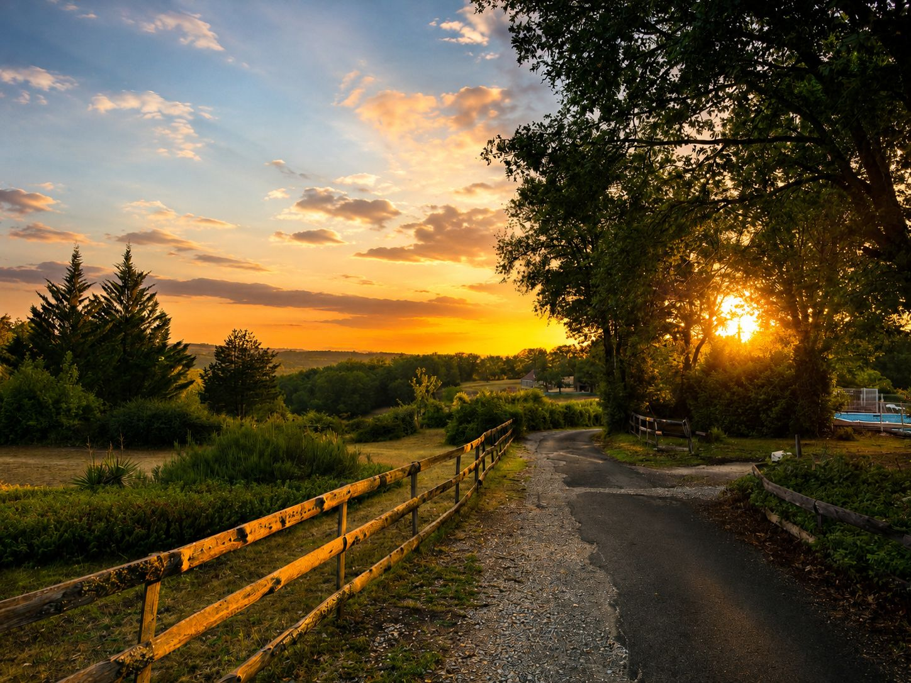
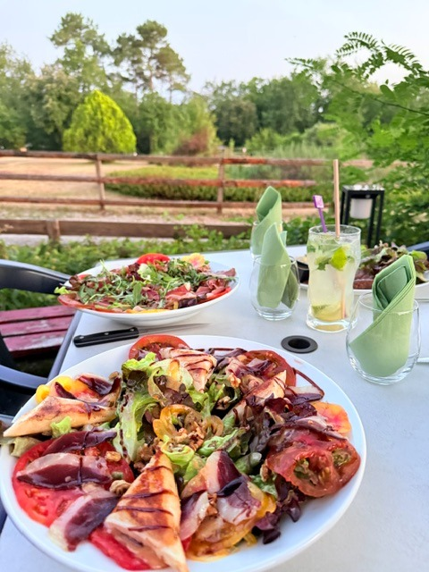
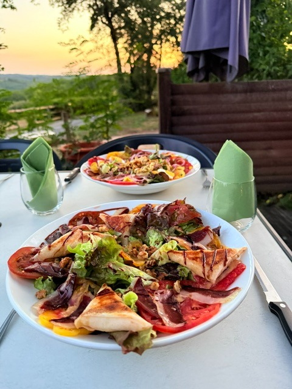

Le cheval
— Compagnon des prés

On y vient pour manger, dormir, boire un verre — et pour ralentir un peu. Que vous soyez à pied, en van, à moto ou en famille, l'Escale vous garde une place.
Entre la nature, les animaux, le calme, la bière fraîche, la pizza, la piscine — chacun trouve sa place, le temps d'une nuit ou d'un moment partagé.
Quatre hectares de bois, de prés et de chemins — et une petite compagnie animale qu’on croise au détour d’une terrasse, d’un sentier, d’un coucher de soleil.
— Compagnon des prés

— Curieuse, en liberté

— Poules, oies, canards

— Chênes, ombrage, silence

Du gîte à la tente sous les arbres, chaque hébergement a été pensé pour que rien ne déborde sur le suivant.
 Photo gîte
Photo gîte
Chaque gîte ouvre sur le jardin, avec terrasse et jardinet.
 Photo tentes — sous-bois ombragé
Photo tentes — sous-bois ombragé
Un sous-bois de sur deux hectares. Vous plantez votre tente où vous voulez, on s'occupe du reste — sanitaires, douches chaudes, eau potable. Barbecues autorisés sur les emplacements prévus.
 Vue vallée
Vue vallée
Une grande prairie ouverte avec vue sur la vallée. Bornes électriques 16A, point d'eau. Vous êtes à proximité du bar, du restaurant et de la piscine. Tarif court séjour pour les voyageurs de passage.
On vient pour manger, dormir,
boire un verre —
on reste pour la sérénité du lieu.
Larcher, c'est d'abord un nom — celui du lieu-dit, du chemin, de la pierre. Puis un domaine qu'on a remis debout, en gardant ce qui vibrait déjà : les arbres, la lumière du soir, le calme.
Aujourd'hui on y dort, on y mange, on y boit un verre. Ni resort, ni terrain de loisirs : une escale familiale, chaleureuse et ouverte à tout le monde.
 La terrasse
Cheval du domaine
La terrasse
Cheval du domaine

Salade fraîchePlage de galets, baignade surveillée, départ canoë au village voisin.
Boucle de 9 km, sous-bois et points de vue sur la vallée.
Marché du samedi, ruelles médiévales, foie gras et noix.
Deux forteresses qui se font face au-dessus de la vallée.
Descente en barque dans une rivière souterraine.
Piscine, bar, pizzas, animaux, hamacs, jeux d'enfants.
 Piscine au coucher de soleil
Piscine au coucher de soleil
 À la piscine
Basse-cour
Chèvre
À la piscine
Basse-cour
Chèvre

Salade maison
Coucher de soleil
Cheval du domaine
« Un vrai coup de cœur ! Je ne devais rester qu’une nuit (emplacement camping)… j’en ai passé deux tant je me suis sentie bien. L’accueil est d’une rare chaleur : même en arrivant seule, je me suis immédiatement sentie à ma place, accueillie avec bienveillance, comme chez des amis. Le cadre est paisible, ressourçant, parfait pour déconnecter. Les équipements sont impeccables, rien ne manque. Et alors les pizzas… un vrai régal ! Une parenthèse pleine de douceur et de simplicité que je recommande les yeux fermés. Merci pour ces beaux moments ! »
« Petit séjour rapide en famille Nous avons trouvé un sublime petit coin calme et très accueillant. Ideal pour des vacances paisibles avec des enfants un véritable parc de jeu pour les petits, avec par dessus tout un super coin restaurant proposant des produits frais et des très bonnes pizzas a manger sur place ou a emporter. Une belle petite pépite. Dommage que nous n'avons pas plus de temps devant nous... nous serions bien resté. »
« Un lieu magnifique. L’air y est vraiment particulier : feuillus et conifères mêlent leurs senteurs et offrent un vrai parfum de forêt. Il y a beaucoup d’espace, c’est idéal pour se promener et se détendre. Le restaurant propose une cuisine savoureuse avec des produits frais — même les feuilles de salade ont un goût unique . Les hôtes sont chaleureux, accueillants et attentionnés. Et les environs valent le détour : il y a plein de choses à voir. Je recommande vivement »
« Une chose à dire : endroit superbe, sauvage, animaux en liberté, idéal pour les enfants avec beaucoup d'espace des jeux à gogos, piscine au top pour les moments de chaleur, énormément d'activités et de visites aux alentours. Un camping familial accueillant, comme on en fait plus de nos jours. Une vraie pépite. Nous devions rester 2 nuits, on a fini par une semaine complète. Adresse à partager (mention spéciale pour les pizzas excellente). Au plaisir de revenir l'année prochaine. »